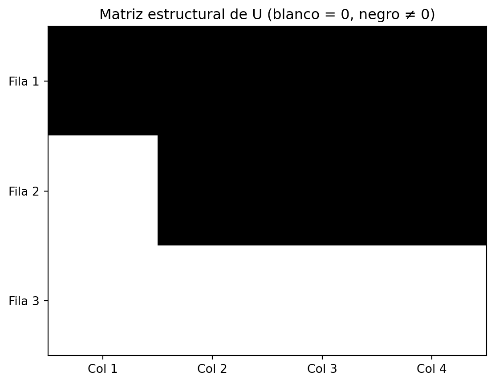

Note que este sistema lo podemos escribir como una ecuación matricial de la forma \(A \cdot x = b\), donde: \[
A =
\begin{bmatrix}
1 & 2 & 3 \\
4 & 5 & 6 \\
7 & 8 & 9
\end{bmatrix}
,
\quad
x =
\begin{bmatrix}
x \\
y \\ z
\end{bmatrix}
,
\quad
b =
\begin{bmatrix}
1 \\ 2 \\ 3
\end{bmatrix}
\]
Para saber si este sistema tiene una solución podemos a analizar el rango de la matriz \(A\) y el rango de la matriz aumentada \([A|b]\). Para ello podemos usar la librería numpy de Python, que nos permite trabajar con álgebra lineal de manera simbólica.
¿Qué puede concluir sobre la existencia de soluciones del sistema? Justifique su respuesta.
¿Si el \(rank(A) = rank([A|b]) < n\) (número de incógnitas) cuantas soluciones tiene el sistema? Justifique su respuesta.
Si el \(rank(A) = rank([A|b]) = n\) (número de incógnitas) cuantas soluciones tiene el sistema? Justifique su respuesta.
Si el \(rank(A) < rank([A|b])\) cuantas soluciones tiene el sistema? Justifique su respuesta.
Usar python para resolver sistemas de ecuaciones con única solución
¿Por qué el anterior sistema tiene única solución?
Usar python para resolver sistemas de ecuaciones con infinitas soluciones
Sea el sistema de ecuaciones lineales:
\[ \begin{cases}
x + 2y + z = 4 \\
2x + 5y + z = 9 \\
3x + 7y + 2z &= 13
\end{cases}
\]
¿Por qué el anterior sistema tiene infinitas soluciones?
Note que la la matriz \(U\) que se imprime tiene una fila de ceros, lo que indica que el sistema tiene infinitas soluciones.
para visualizar las soluciones podemos usar el siguiente código:
import numpy as npimport scipy.linalg as laA = np.array([[1, 2, 1], [2, 5, 1], [3, 7, 2]]) # matriz de coeficientesb = np.array([4, 9, 13]) # vector de términos independientes# Construimos la matriz aumentada [A|b]Ab = np.column_stack((A, b))_,_,U=la.lu(Ab) # descomposición LUprint("Matriz U de la descomposición LU:\n", U)## visualizacion de la matriz aumentada en forma escalonadaimport matplotlib.pyplot as plt# Crear matriz binaria: 0 si el valor es exactamente 0, 1 si es diferenteU_binaria = (np.abs(U) >1e-10).astype(int) # tolerancia para evitar errores numéricos# Visualizarplt.imshow(U_binaria, cmap='Greys', interpolation='nearest')plt.title("Matriz estructural de U (blanco = 0, negro ≠ 0)")plt.xticks(np.arange(U.shape[1]), [f'Col {i+1}'for i inrange(U.shape[1])])plt.yticks(np.arange(U.shape[0]), [f'Fila {i+1}'for i inrange(U.shape[0])])plt.grid(False)plt.show()
Matriz U de la descomposición LU:
[[ 3.00000000e+00 7.00000000e+00 2.00000000e+00 1.30000000e+01]
[ 0.00000000e+00 3.33333333e-01 -3.33333333e-01 3.33333333e-01]
[ 0.00000000e+00 0.00000000e+00 9.99200722e-16 0.00000000e+00]]

Note que de esta forma tenemos que el sistema se convierte en:
\[ \begin{cases}
3x + 7y + 2z = 13 \\
0x+0.333y+ 0.333z=0.333\\
0x + 0y + 0z = 0
\end{cases}
\] de esta forma podemos expresar las variables en función de una variable libre, por ejemplo \(z=t\) y despejar \(x\) y \(y\) en función de \(t\). \[ \begin{cases}
x =\frac{5t+5}{3} \\
y = 1- t \\
z = t
\end{cases}
\]
## Problema 2: Sistemas de Ecuaciones Lineales
Problema 2: Modelo de Flujo en una Red de Distribución de Agua (Sistema con Solución Única)
Una red hidráulica está compuesta por 7 canales que distribuyen agua entre 5 nodos: A, B, C, D y E. El flujo de agua a través de cada canal se representa mediante una variable \(x_i\), donde \(x_1, x_2, \dots, x_7\) son los caudales de los canales.
Según el principio de conservación de caudal, en cada nodo la cantidad de agua que entra menos la que sale debe ser igual a una constante \(b_i\), que representa una demanda (si es positiva) o un aporte externo (si es negativa).
Además, se conocen dos restricciones adicionales impuestas por sensores del sistema:
El caudal en el canal 2 es igual al doble del caudal en el canal 3: \(x_2 = 2x_3\)
El caudal total de entrada al sistema (por canal 7) es igual a 10 litros por segundo: \(x_7 = 10\)
Descripción de la red
Los canales conectan los nodos de la siguiente manera:
Canal
Desde
Hacia
Variable
1
A
B
\(x_1\)
2
B
C
\(x_2\)
3
B
D
\(x_3\)
4
C
D
\(x_4\)
5
D
E
\(x_5\)
6
C
E
\(x_6\)
7
E
A
\(x_7\)
Planteamiento del sistema de ecuaciones
Conservación de caudal en cada nodo:
Nodo A
\[x_7 - x_1 = b_1\]
Nodo B
\[x_1 - x_2 - x_3 = b_2\]
Nodo C
\[x_2 - x_4 - x_6 = b_3\]
Nodo D
\[x_3 + x_4 - x_5 = b_4\]
Nodo E
\[x_5 + x_6 - x_7 = b_5\]
Restricciones adicionales:
Restricción 1:
\[x_2 - 2x_3 = 0\]
Restricción 2:
\[x_7 = 10\]
Forma matricial del sistema
$$ Una red hidráulica está compuesta por 7 canales que distribuyen agua entre 5 nodos: A, B, C, D y E. El flujo de agua a través de cada canal se representa mediante una variable \(x_i\), donde \(x_1, x_2, \dots, x_7\) son los caudales de los canales.
Según el principio de conservación de caudal, en cada nodo la cantidad de agua que entra menos la que sale debe ser igual a una constante \(b_i\), que representa una demanda (si es positiva) o un aporte externo (si es negativa).
Descripción de la red
Los canales conectan los nodos de la siguiente manera:
Plantear el sistema de 7 ecuaciones lineales con 7 incógnitas que representa el comportamiento hidráulico de la red.
Escribir el sistema en forma matricial \(A \cdot x = b\)
Verificar si sistema tiene una única solución.
Resolver el sistema de ecuaciones usando Python, para un vector de demandas/aportes \(b = [0, -5, 0, 0, 5]\) (es decir, el nodo B tiene una demanda de 5 l/s y el nodo E un aporte de 5 l/s).
Problema 3: Sistemas de Ecuaciones Lineales
📦 Enunciado: Análisis de Flujos en una Red Logística Nacional
La empresa AgriRed Logística S.A.S. gestiona una red de distribución de alimentos en Colombia, compuesta por 8 centros logísticos ubicados en diferentes departamentos: Antioquia, Cundinamarca, Valle del Cauca, Bolívar, Santander, Tolima, Nariño y Atlántico. Cada centro logístico maneja diariamente un volumen de alimentos (en toneladas), que se transfiere entre centros según rutas establecidas o se destina a abastecer hospitales, escuelas y comunidades rurales.
La empresa desea garantizar que los flujos entre centros cumplan con ciertas restricciones operativas, entre ellas:
Capacidad máxima de ciertas rutas,
Requerimientos mínimos de abastecimiento en algunos nodos,
Y equilibrio entre lo que se recibe y lo que se despacha.
El equipo técnico ha identificado 7 ecuaciones de balance basadas en el análisis de la operación, pero debido a la complejidad de la red, hay más rutas posibles (8) que restricciones disponibles (7). Por tanto, algunas rutas pueden ajustarse libremente sin romper las reglas generales.
Se busca modelar esta red como un sistema lineal de 7 ecuaciones con 8 incógnitas, donde cada incógnita representa el flujo (en toneladas) a través de una ruta principal o hacia un centro de consumo.
Se ha comprobado que:
El sistema tiene infinitas soluciones y 6 variables libres, lo que implica una alta flexibilidad operativa,
Y que al aplicar reducción de Gauss con pivoteo parcial, la matriz triangular superior \(U\) de la matriz aumentada \([A|b]\) contiene solo números enteros, lo que facilita su análisis visual.
🔧 Objetivo
Tu tarea es usar este sistema para:
Determinar la estructura de soluciones posibles.
Identificar qué rutas pueden modificarse libremente sin afectar el cumplimiento global.
Visualizar gráficamente la estructura de la matriz \(U\), donde los ceros aparezcan en blanco y los valores distintos de cero en negro, para identificar de forma clara qué ecuaciones aportan restricciones efectivas.
🧮 Detalles técnicos
Cada incógnita \(x_i\) representa el flujo diario (en toneladas) de alimentos a través de una de las 8 principales rutas:
Variable
Ruta / Uso
\(x_1\)
Centro 1 (Antioquia) → Centro 2 (Cundinamarca)
\(x_2\)
Centro 2 → Centro 3 (Valle)
\(x_3\)
Centro 1 → Centro 3
\(x_4\)
Centro 4 (Bolívar) → Hospitales locales
\(x_5\)
Centro 5 (Santander) → Comunidades rurales
\(x_6\)
Centro 6 (Tolima) → Centro 1
\(x_7\)
Centro 7 (Nariño) → Plantas de procesamiento
\(x_8\)
Centro 8 (Atlántico) → Escuelas rurales
El sistema está dado por las siguientes ecuaciones de balance logístico, derivadas de las observaciones operativas: